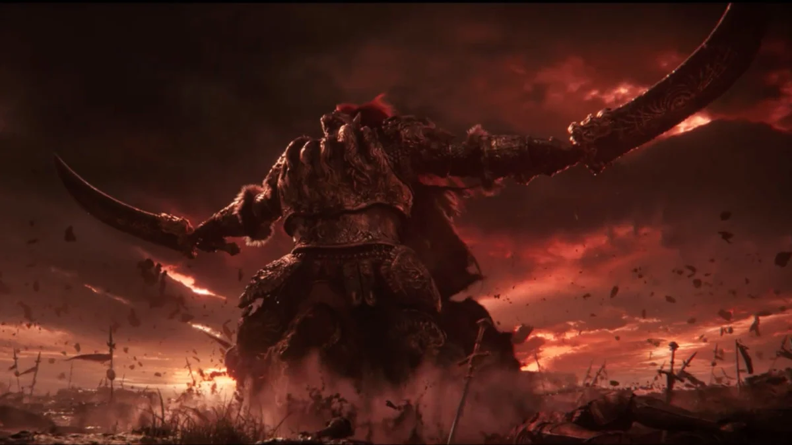

Hace mucho tiempo, la Reina Marika la Eterna gobernaba sobre todo bajo la luz del Árbol Áureo. Pero con la Noche de los Puñales Negros, la muerte se infiltró en el orden dorado.
La Devastación
La Ruptura
Marika destruye el Círculo de Elden, y Radagon intenta repararlo sin éxito.
La Guerra de los Semidioses
Los hijos de Marika reclaman las runas. Enloquecidos por su nuevo poder, inician una guerra total.
La Batalla de Caelid
El General Radahn y Malenia la Espada de Miquella se enfrentan en un duelo legendario.
"Levantaos, Sinluz. Vosotros muertos que aún vivís. La llamada de la gracia olvidada os habla a todos."
Los Portadores de Runas

Malenia
La Espada de Miquella. Invicta en batalla, maldita por la putrefacción.

General Radahn
El Azote de las Estrellas. Mantiene a raya el movimiento del cosmos.